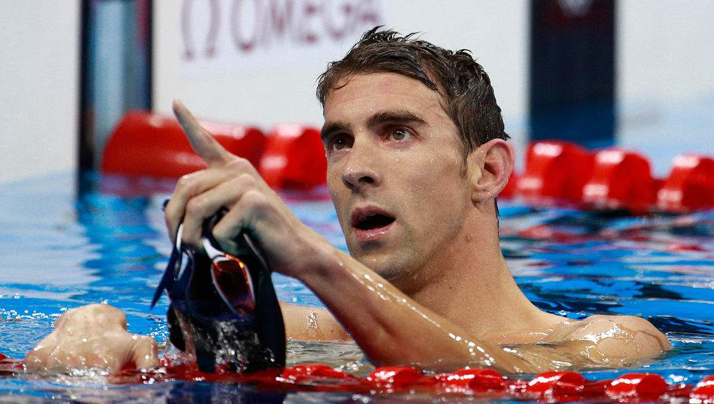
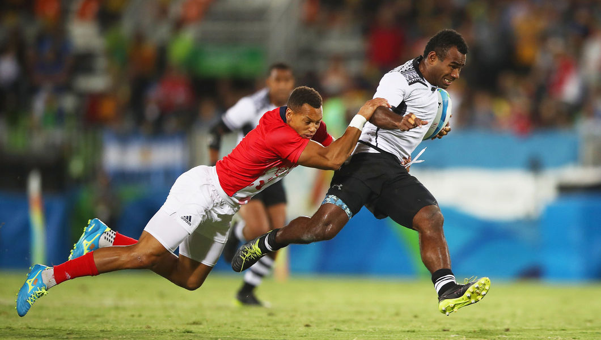
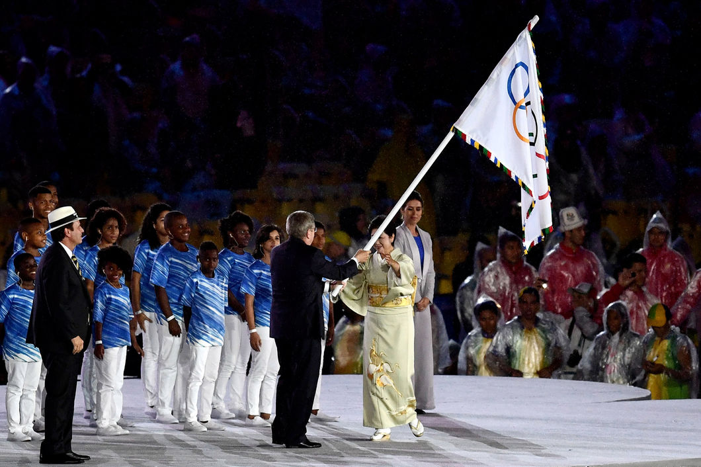

HIGHLIGHTS OF THE GAMES
 MICHAEL PHELPS LED AN ALL-STAR CAST OF MULTIPLE MEDAL WINNERS AT RIO 2016, WITH KATIE LEDECKY, SIMONE BILES, USAIN BOLT, JASON KENNY, KATINKA HOSSZU, RYAN MURPHY AND DANUTA KOZAK ALSO FEATURING HIGH ON THE BILL, ALONG WITH A CLUTCH OF OTHER DISTINGUISHED OLYMPIANS.
 FROM THE SOUTH AFRICAN RUNNER WAYDE VAN NIEKERK, WHO BROKE THE WORLD RECORD IN THE MEN’S 400M, TO THE FIJI MEN’S RUGBY SEVENS TEAM, WHO WON THEIR NOC’S FIRST EVER GOLD MEDAL, RIO 2016 WAS AWASH WITH RECORDS AND LANDMARK MOMENTS.SOUTH AFRICA’S WAYDE VAN NIEKERK HAD ALREADY MADE HISTORY AS THE FIRST ATHLETE TO RUN SUB-10 SECONDS FOR THE 100M, SUB-20 SECONDS FOR THE 200M AND SUB-44 SECONDS FOR THE 400M. AND ON THE BLUE TRACK OF RIO’S OLYMPIC STADIUM ON 14 AUGUST, THE 24-YEAR-OLD TOOK HIS REPUTATION TO ANOTHER LEVEL, WHEN HE SMASHED MICHAEL JOHNSON’S 17-YEAR-OLD WORLD RECORD IN THE FINAL OF THE 400M, RUNNING A PHENOMENAL 43.03 SECONDS, TO LEAVE TWO PREVIOUS OLYMPIC CHAMPIONS TRAILING IN HIS WAKE.
 PRESIDENT BACH THEN TOOK THE STAGE FLANKED BY THE MAYOR OF RIO EDUARDO PAES AND TOKYO GOVERNOR YURIKO KOIKE, AS THE FOCUS SHIFTED FROM THE CURRENT HOST CITY TO ITS SUCCESSOR IN 2020.